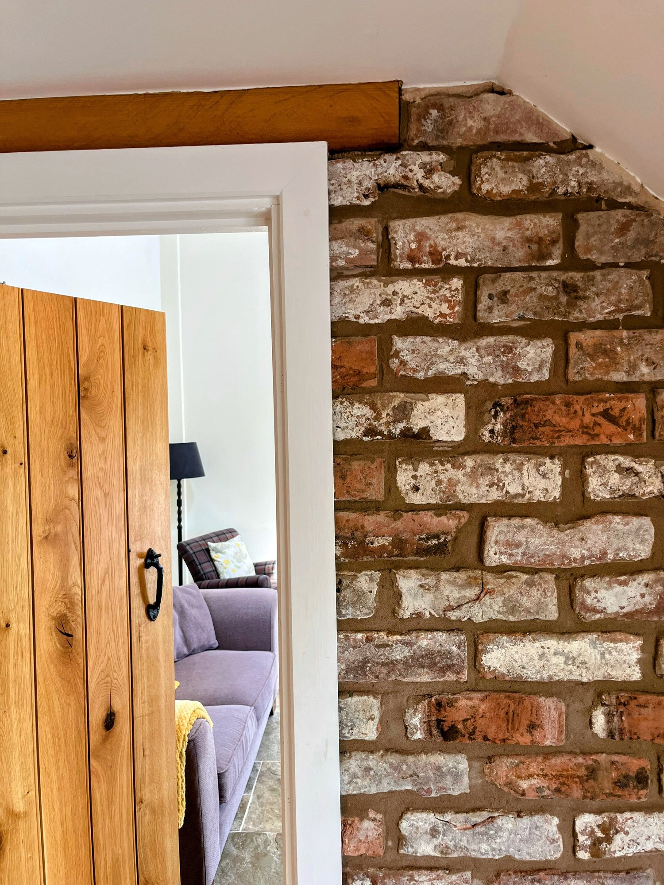

Still very much a working farm
The barn sits on a ten-acre smallholding just outside the village of Coton, four miles from Whitchurch. It was a working farm building long before it became somewhere to stay, and the conversion has kept that history close: reclaimed brick, oak beams overhead, and stone underfoot through the ground floor.
Inside, the open-plan kitchen and living space is built around a wood burner, with doors opening straight onto the patio and garden. It suits a big family gathering just as well as a quiet week away — there's room to spread out, and enough character that nobody mistakes it for a hotel.
